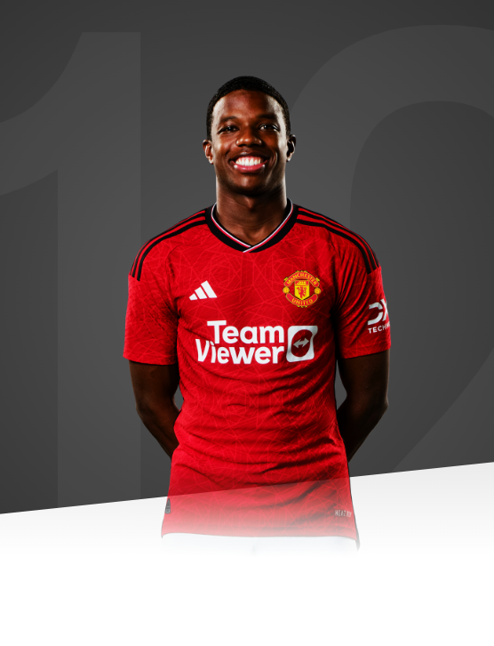

Whilst I know that I am still young and will continue to develop, I can promise the United fans that I will leave everything on the pitch every

AGE
24
APPEARANCES
39
CLEAN SHEETS
0
BIOGRAPHY
Dynamic and energetic, Tyrell Malacia possesses the traits needed to be a top-class defender.
Aged just nine, Malacia joined the youth system of successful Eredivisie side Feyenoord. The defender continued his development with the Dutch side, and was awarded his first professional contract in 2015, at the age of 15.
Two years later, the full-back made his senior debut for Feyenoord. Malacia played the full 90 minutes as the Dutch side overcame Italian giants Napoli 2-1 in the Champions League.
The Dutchman's rise continued, and he made his Eredivisie debut just a week later, featuring in a 1-1 draw with SC Heerenveen. 2018 was a positive year for Malacia, as Feyenoord won the KNVB Cup and the Johan Cruyff Shield.
The 2020/21 and 2021/22 seasons were when Malacia established himself as a key player for Feyenoord. The full-back played 33 and 50 times respectively across the two campaigns, reaching the final of the 2022 UEFA Europa Conference League and featuring in the Team of the Tournament.
Malacia's club success coincided with his first international call-up for the Netherlands, which came on August 27 2021. The defender had previously represented his nation from under-16s to under-21s, as well as being chosen in the preliminary Curacao national squad for the 2021 CONCACAF Gold Cup due to his Curacoan heritage
Since his Netherlands call-up, Malacia has established himself as an Oranje regular, making five appearances.
On 5 July 2022, the defender's move to United was confirmed, making him the first signing under the management of fellow Dutchman Erik ten Hag. He was the only summer arrival involved in the tour of Thailand and Australia and, after a difficult start to the season for the Reds, he was given a run of a games starting at left-back, impressing in early wins over Liverpool and Arsenal.
Malacia made 39 appearances in his debut campaign at Old Trafford while competing with Luke Shaw and, although he was an unused substitute during our Carabao Cup final success, he started four of the five games en route to the Wembley showpiece.